Add an RPA automation to your Maestro workflow¶
Here is our plan for this lesson:
- Trigger an RPA workflow from the Maestro agentic process
- Learn how IXP — Unstructured Docs works
- Learn how process inputs and outputs work
Goal¶
The first step of the agentic process runs as an RPA workflow: it downloads the benefits application from a storage bucket and uses IXP to extract the key data points. You'll wire that workflow into the Maestro diagram, then configure the gateway that decides whether extraction was complete.
Automating Tasks using Robots¶
In our scenario, the agentic process receives as an input a PDF document representing the benefit claims application. This document is stored inside an Orchestrator Storage Bucket.
Let's assume that there is an external application from which the applicant uploads the application and any other supporting documents, and they get stored in the storage buckets. The start point of our agentic process are the documents from the storage bucket.
The first step in our agentic process is going to be executed using an RPA workflow and does the following tasks:
- Download the application document from the Storage Bucket
- Uses IXP — Unstructured Documents to extract key data points from the benefits application using Generative AI.
IXP — Unstructured Docs¶
UiPath IXP — Unstructured Documents uses Generative Extraction to process complex, unstructured documents.
This capability is ideal for advanced document processing when:
- documents contain paragraphs of free-form text or complex elements, such as: Complex tables, Graphics, Charts, Checkboxes, Call-out boxes, Signatures, Handwriting etc.
- you need to extract inferred values (information that is not stated directly in the document but must be derived from context)
The general steps of the creation and deployment process within the Unstructured and complex document capability are the following:
- Model building
- Upload sample documents
- Define the document taxonomy — specific data points (fields) and their relationship (field groups) you wish to extract.
- Build the taxonomy — configure the extraction schema and provide instructions to inform extraction predictions
- Review LLM predictions — assess the initial predictions to gauge model performance
- Modify prompts — adjust prompt instructions based on performance reviews and test their impact
- Validate extractions — confirm or correct extractions to collect accurate ground truth data for further validation
- Model validation
- Review performance — Review the performance statistics for each model version
- Compare models — Evaluate different model versions
- Refine performance
- Model deployment
- Publish models — once the models achieve the desired performance level, publish and deploy models to make them available for Studio workflows
- Roll back to a previous model version, if necessary.
Steps¶
1. Explore the RPA workflow¶
Our RPA workflow is already part of the solution and is called Process Benefits Application. Get familiar with it by taking a look inside.
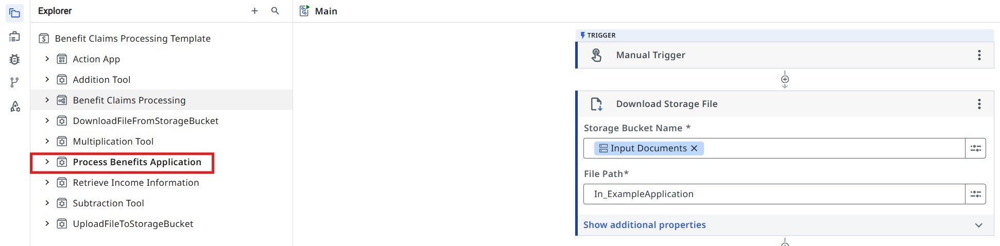
Process Benefits Application inputs and outputs.
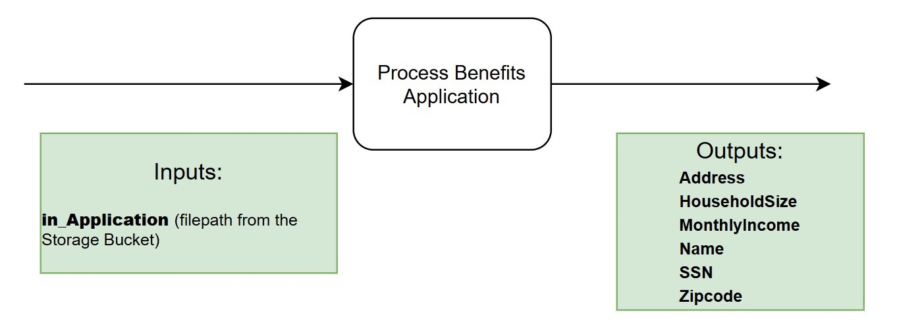
Get familiar with the RPA workflow by giving it a run in debug mode and explore its outputs. You can use a sample file path like:
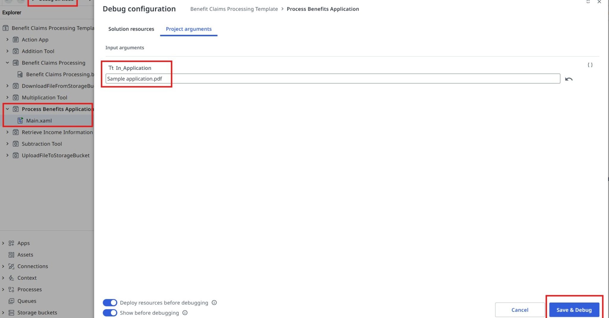
Have a look at the output panel.
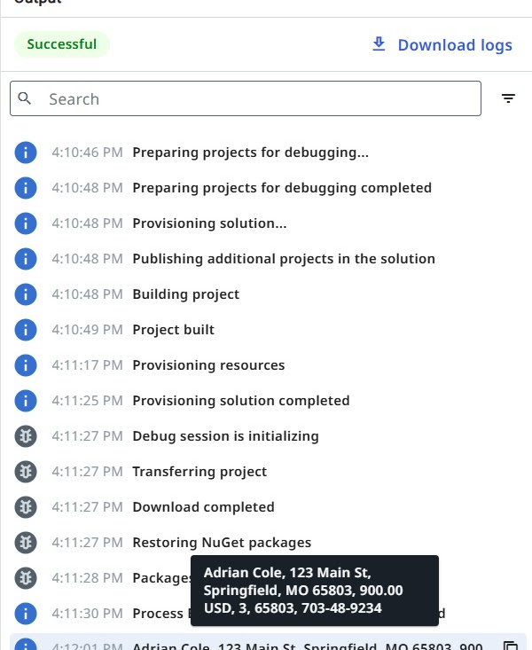
2. Trigger the workflow from the agentic process¶
Once you have validated that the process runs as expected, let's go back to the Agentic Process diagram and update our task:
- Open the properties panel by clicking on the task
- Pick Start and wait for RPA workflow as the task's Action type.
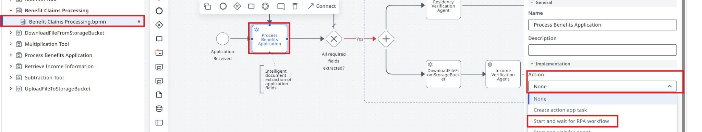
Find the Process Benefits Application RPA workflow and select it.
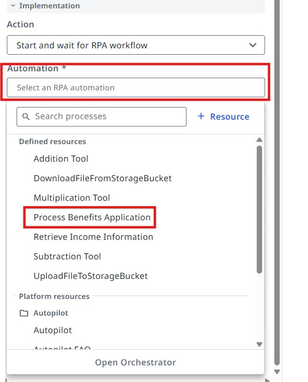
You will be able to see and configure inputs and outputs right away. We need to pass the In_Application variable as input (this comes as an input argument from the start event of our agentic process).
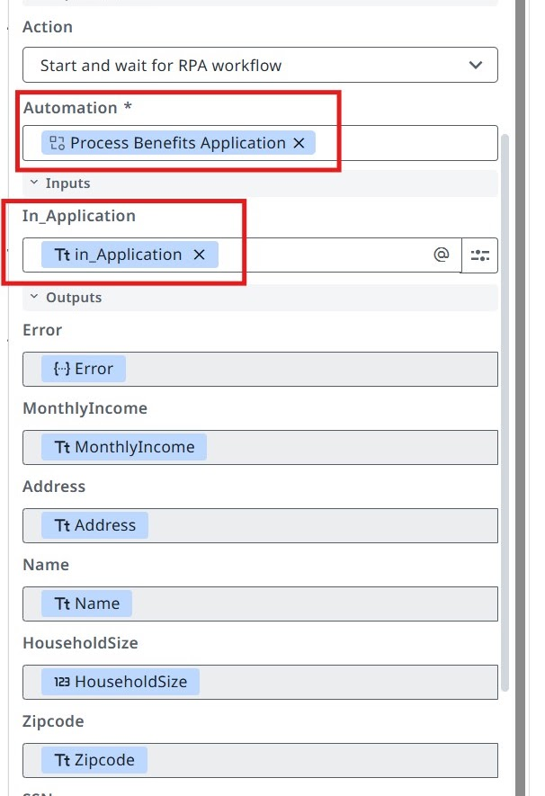
Configuring the Exclusive Gateway¶
Based on the outputs of the RPA process (the values extracted from the benefits application document), we can configure the All required fields extracted? exclusive gateway (decision point).
- If any information is missing, we enter the Get missing info from applicant sub-process.
- If all fields are extracted, we move to the next steps — performing fraud checks for residency and income.
3. Configure the Yes branch¶
Let's configure the Yes branch — this should be executed when all fields are extracted.
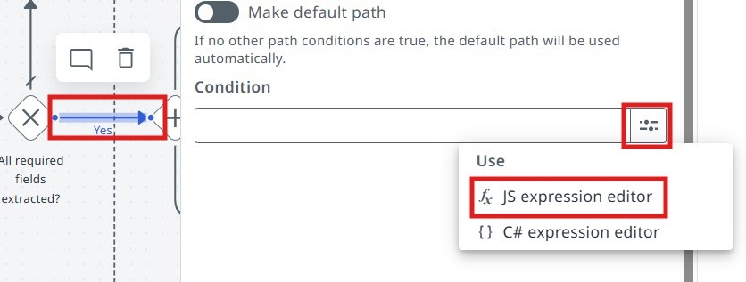
Click on the Yes branch and go to JS expression editor.
Enter the following JS expression:
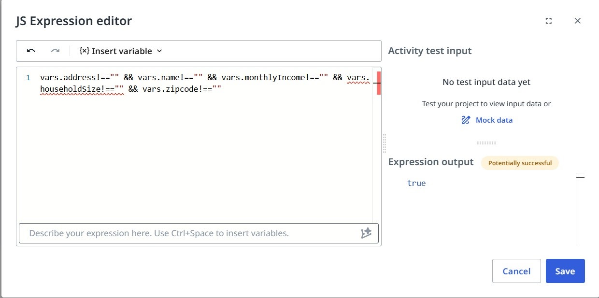
vars.address!=="" && vars.name!=="" && vars.monthlyIncome!=="" && vars.householdSize!=="" && vars.zipcode!=="" && vars.ssn!==""
4. Make the No branch the default path¶
Since there are only two output paths for our exclusive gateway, we can mark the No branch as the default path (if the condition of the Yes path will not be met, the No path will be taken out of the gateway).
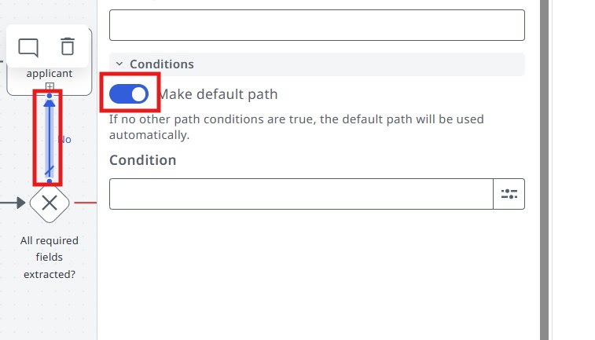
5. Run the agentic process¶
Now let's try launching the Agentic Process from Studio Web and have a look at the execution.
Debug the process with this In_Application value:
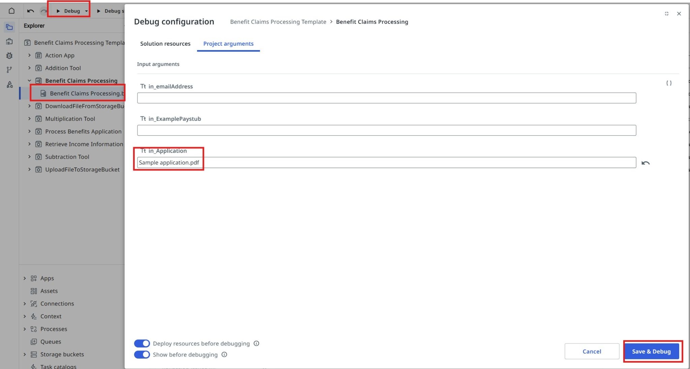
Look at the RPA workflow input/output variables and the execution paths you configured.
Observe the execution. Is the flow taking the correct path (according to the conditions you configured)?
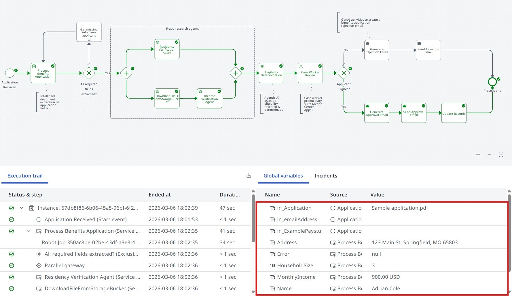
Time to move to the next one!